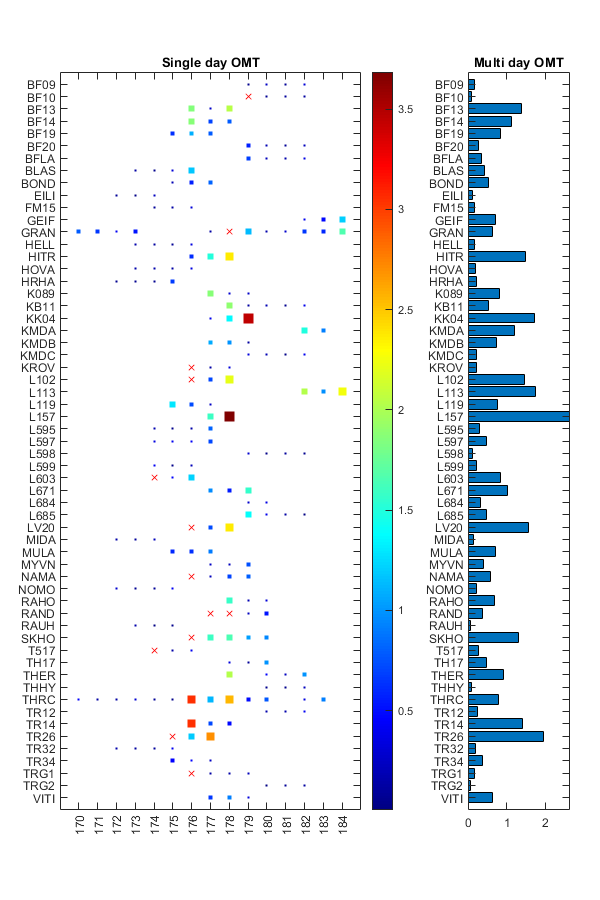

PPPDEMO2 example script
Demo script to read a whole year of data from NRCAN summary files and combine for every statuion the single day solutions into a single multi-day solution with statistical testing.
Created: 12 April 2020 by Hans van der Marel Modified:
Contents
Get the directory names with NRCAN summary files
For each year, the solutions for every station is stored in a unique subdirectory for each station.
fprintf('Get directory names with NRCAN summary files\n\n'); dirroot='d:\Surfdrive\Iceland\DATAPACK\2_GPS\00_DATA\2019\03_PPP'; dirnames=dir(dirroot); dirnames=dirnames([dirnames.isdir]); dirnames=dirnames(~cellfun(@(x) strncmp(x,{'.'},1), {dirnames.name}));
Get directory names with NRCAN summary files
Combine single-day solutions into a multi-day solution for each station
We loop over each directory and combine for each station the single day solutions into a multi-day solution.
If the OMT exceeds a certain threshold, we try once more without the day with the largest omtfile value. The execution is done within a try-catch construction in order to catch various other errors.
When the combination is succesfull it is saved in a structure array
maxomt_for_reprocessing=2; maxomt_for_save=10; clear pppsave; clear pppremoved pppskipped; pppremoved=[]; pppskipped=[]; kk=0; for k=1:numel(dirnames) fprintf('Processing %s ...\n\n',dirnames(k).name); try % Read the NRCAN summary files filespec=fullfile(dirroot,dirnames(k).name,'*.sum'); pppstruct = xtrNRCAN(filespec); % Combine the single day solutions into one multi-day solution with statistical testing pppcomb=pppcombine(pppstruct); fprintf('Processing %s done (OMT value %.3f)\n',dirnames(k).name,pppcomb.omt) fprintf('Observation file OMT\n') for l=1:numel(pppcomb.obsfile) fprintf('%20s %8.3f\n',pppcomb.obsfile{l},pppcomb.omtfile(l)) end fprintf('\n\n') % If OMT > max_OMT, try again, removing the worst day (but only with at least 3 days) select=1:numel(pppcomb.omtfile); while pppcomb.omt > maxomt_for_reprocessing && numel(pppcomb.omtfile) > 2 [~,i]=max(pppcomb.omtfile); fprintf('*** Ignoring solution file %s ***\n\n',pppcomb.obsfile{i}) select(i)=[]; pppremoved=[ pppremoved ; pppcomb.name pppcomb.obsfile(i) {pppcomb.omtfile(i)} ]; pppcomb=pppcombine(pppstruct,select); fprintf('Re-processing %s done (OMT value %.3f)\n',dirnames(k).name,pppcomb.omt) fprintf('Observation file OMT\n') for l=1:numel(pppcomb.obsfile) fprintf('%17s %8.3f\n',pppcomb.obsfile{l},pppcomb.omtfile(l)) end fprintf('\n\n') end if pppcomb.omt < maxomt_for_save kk=kk+1; pppsave(kk)=pppcomb; else pppskipped=[ pppskipped ; pppcomb.name {pppstruct.obsfile} {pppcomb.omt} ]; end catch ME ME warning(['There was an error processing ' dirnames(k).name ]) pppskipped=[ pppskipped ; dirnames(k).name {pppstruct.obsfile} { nan } ]; end end % Summarize the removed data files nremoved=size(pppremoved,1); if nremoved > 0 fprintf('\n\nRemoved files (%d):\n\n',nremoved) fprintf('Name Obsfile OMT\n') for k=1:nremoved fprintf('%s %s %10.4g\n',pppremoved{k,1},pppremoved{k,2},pppremoved{k,3}) end end % Summarize the skipped stations nskipped=size(pppskipped,1); if nskipped > 0 fprintf('\n\nSkipped stations (%d):\n',nskipped) pppskipped %for k=1:nskipped % fprintf('%s %end end
Processing BF09 ...
Processing BF09 done (OMT value 0.170)
Observation file OMT
BF091790.19o 0.046
BF091800.19o 0.238
BF091810.19o 0.078
BF091820.19o 0.318
Processing BF10 ...
Processing BF10 done (OMT value 60719033115.540)
Observation file OMT
BF101790.19O 219664456603.033
BF101800.19O 9849417043.008
BF101810.19O 10742731827.635
BF101820.19O 2619526988.485
*** Ignoring solution file BF101790.19O ***
Re-processing BF10 done (OMT value 0.088)
Observation file OMT
BF101800.19O 0.064
BF101810.19O 0.091
BF101820.19O 0.110
Processing BF13 ...
Processing BF13 done (OMT value 1.386)
Observation file OMT
BF131760.19o 1.858
BF131770.19o 0.262
BF131780.19o 2.038
Processing BF14 ...
Processing BF14 done (OMT value 1.117)
Observation file OMT
BF141760.19o 1.860
BF141770.19o 0.704
BF141780.19o 0.788
Processing BF19 ...
Processing BF19 done (OMT value 0.834)
Observation file OMT
BF191750.19o 0.627
BF191760.19o 1.088
BF191770.19o 0.786
Processing BF20 ...
Processing BF20 done (OMT value 0.260)
Observation file OMT
BF201790.19o 0.566
BF201800.19o 0.178
BF201810.19o 0.084
BF201820.19o 0.214
Processing BFLA ...
Processing BFLA done (OMT value 0.354)
Observation file OMT
BFLA1790.19o 0.689
BFLA1800.19o 0.216
BFLA1810.19o 0.150
BFLA1820.19o 0.362
Processing BLAS ...
Processing BLAS done (OMT value 0.415)
Observation file OMT
BLAS1730.19o 0.123
BLAS1740.19o 0.044
BLAS1750.19o 0.319
BLAS1760.19o 1.175
Processing BOND ...
Processing BOND done (OMT value 0.523)
Observation file OMT
BOND1750.19o 0.186
BOND1760.19o 0.569
BOND1770.19o 0.815
Processing EILI ...
Processing EILI done (OMT value 0.114)
Observation file OMT
EILI1720.19o 0.088
EILI1730.19o 0.031
EILI1740.19o 0.224
Processing FM15 ...
Processing FM15 done (OMT value 0.172)
Observation file OMT
FM151740.19o 0.081
FM151750.19o 0.128
FM151760.19o 0.308
Processing GEIF ...
Processing GEIF done (OMT value 0.700)
Observation file OMT
GEIF1820.19o 0.404
GEIF1830.19o 0.490
GEIF1840.19o 1.206
Processing GRAN ...
Processing GRAN done (OMT value 2.046)
Observation file OMT
gran1700.19o 1.190
gran1710.19o 0.888
gran1720.19o 0.354
gran1730.19o 0.837
gran1770.19o 0.351
gran1780.19o 16.180
gran1790.19o 0.709
gran1800.19o 0.061
gran1810.19o 0.305
gran1820.19o 0.442
gran1830.19o 0.896
gran1840.19o 2.345
*** Ignoring solution file gran1780.19o ***
Re-processing GRAN done (OMT value 0.635)
Observation file OMT
gran1700.19o 0.782
gran1710.19o 0.664
gran1720.19o 0.413
gran1730.19o 0.534
gran1770.19o 0.122
gran1790.19o 1.131
gran1800.19o 0.155
gran1810.19o 0.264
gran1820.19o 0.660
gran1830.19o 0.595
gran1840.19o 1.670
Processing HELL ...
Processing HELL done (OMT value 0.167)
Observation file OMT
HELL1730.19o 0.148
HELL1740.19o 0.111
HELL1750.19o 0.071
HELL1760.19o 0.336
Processing HITR ...
Processing HITR done (OMT value 1.497)
Observation file OMT
HITR1760.19o 0.616
HITR1770.19o 1.502
HITR1780.19o 2.372
Processing HOVA ...
Processing HOVA done (OMT value 0.195)
Observation file OMT
HOVA1730.19O 0.151
HOVA1740.19O 0.155
HOVA1750.19O 0.129
HOVA1760.19O 0.346
Processing HRHA ...
Processing HRHA done (OMT value 0.207)
Observation file OMT
HRHA1720.19o 0.047
HRHA1730.19o 0.056
HRHA1740.19o 0.059
HRHA1750.19o 0.665
Processing K089 ...
Processing K089 done (OMT value 0.804)
Observation file OMT
K0891770.19o 1.870
K0891780.19o 0.289
K0891790.19o 0.254
Processing KB11 ...
Processing KB11 done (OMT value 0.529)
Observation file OMT
KB111780.19o 1.902
KB111790.19o 0.116
KB111800.19o 0.186
KB111810.19o 0.052
KB111820.19o 0.391
Processing KK04 ...
Processing KK04 done (OMT value 1.732)
Observation file OMT
KK041770.19o 0.388
KK041780.19o 1.361
KK041790.19o 3.447
Processing KMDA ...
Processing KMDA done (OMT value 1.209)
Observation file OMT
KMDA1820.19o 1.498
KMDA1830.19o 0.921
Processing KMDB ...
Processing KMDB done (OMT value 0.725)
Observation file OMT
KMDB1770.19o 1.077
KMDB1780.19o 0.986
KMDB1790.19o 0.111
Processing KMDC ...
Processing KMDC done (OMT value 0.232)
Observation file OMT
KMDC1790.19o 0.322
KMDC1800.19o 0.179
KMDC1810.19o 0.030
KMDC1820.19o 0.399
Processing KROV ...
Processing KROV done (OMT value 2.259)
Observation file OMT
KROV1760.19o 4.595
KROV1770.19o 0.788
KROV1780.19o 1.394
*** Ignoring solution file KROV1760.19o ***
Re-processing KROV done (OMT value 0.227)
Observation file OMT
KROV1770.19o 0.127
KROV1780.19o 0.328
Processing L102 ...
Processing L102 done (OMT value 49434372523.208)
Observation file OMT
L1021760.19O 113565182928.450
L1021770.19O 24591670186.462
L1021780.19O 10146264454.711
*** Ignoring solution file L1021760.19O ***
Re-processing L102 done (OMT value 1.463)
Observation file OMT
L1021770.19O 0.709
L1021780.19O 2.217
Processing L113 ...
Processing L113 done (OMT value 1.753)
Observation file OMT
L1131820.19o 2.024
L1131830.19o 0.973
L1131840.19o 2.261
Processing L119 ...
Processing L119 done (OMT value 0.752)
Observation file OMT
L1191750.19o 1.291
L1191760.19o 0.728
L1191770.19o 0.236
Processing L157 ...
Processing L157 done (OMT value 2.637)
Observation file OMT
L1571770.19O 1.589
L1571780.19O 3.685
Processing L595 ...
Processing L595 done (OMT value 0.293)
Observation file OMT
L5951740.19o 0.172
L5951750.19o 0.037
L5951760.19o 0.145
L5951770.19o 0.819
Processing L597 ...
Processing L597 done (OMT value 0.471)
Observation file OMT
L5971740.19o 0.340
L5971750.19o 0.401
L5971760.19o 0.430
L5971770.19o 0.714
Processing L598 ...
Processing L598 done (OMT value 0.119)
Observation file OMT
L5981790.19o 0.286
L5981800.19o 0.031
L5981810.19o 0.103
L5981820.19o 0.056
Processing L599 ...
Processing L599 done (OMT value 0.210)
Observation file OMT
L5991740.19o 0.408
L5991750.19o 0.027
L5991760.19o 0.196
Processing L603 ...
Processing L603 done (OMT value 7905002889292.958)
Observation file OMT
L6031740.19O 18967550429387.133
L6031750.19O 3491242489925.175
L6031760.19O 1256215748566.568
*** Ignoring solution file L6031740.19O ***
Re-processing L603 done (OMT value 0.831)
Observation file OMT
L6031750.19O 0.446
L6031760.19O 1.216
Processing L671 ...
Processing L671 done (OMT value 1.027)
Observation file OMT
L6711770.19o 0.957
L6711780.19o 0.554
L6711790.19o 1.570
Processing L684 ...
Processing L684 done (OMT value 0.312)
Observation file OMT
L6841790.19o 0.264
L6841800.19o 0.361
Processing L685 ...
Processing L685 done (OMT value 0.477)
Observation file OMT
L6851790.19o 1.398
L6851800.19o 0.382
L6851810.19o 0.123
L6851820.19o 0.004
Processing LV20 ...
Processing LV20 done (OMT value 3.497)
Observation file OMT
LV201760.19o 6.106
LV201770.19o 1.628
LV201780.19o 2.755
*** Ignoring solution file LV201760.19o ***
Re-processing LV20 done (OMT value 1.551)
Observation file OMT
LV201770.19o 0.734
LV201780.19o 2.368
Processing MIDA ...
Processing MIDA done (OMT value 0.150)
Observation file OMT
MIDA1720.19o 0.147
MIDA1730.19o 0.097
MIDA1740.19o 0.206
Processing MULA ...
Processing MULA done (OMT value 0.710)
Observation file OMT
MULA1750.19o 0.598
MULA1760.19o 0.626
MULA1770.19o 0.905
Processing MYVN ...
Processing MYVN done (OMT value 0.398)
Observation file OMT
MYVN1770.19o 0.240
MYVN1780.19o 0.207
MYVN1790.19o 0.747
Processing NAMA ...
Processing NAMA done (OMT value 62245189542.937)
Observation file OMT
NAMA1760.19O 211800179484.593
NAMA1770.19O 15263824228.660
NAMA1780.19O 17973700522.347
NAMA1790.19O 3943053936.150
*** Ignoring solution file NAMA1760.19O ***
Re-processing NAMA done (OMT value 0.575)
Observation file OMT
NAMA1770.19O 0.210
NAMA1780.19O 0.708
NAMA1790.19O 0.807
Processing NOMO ...
Processing NOMO done (OMT value 0.215)
Observation file OMT
NOMO1720.19O 0.287
NOMO1730.19O 0.075
NOMO1740.19O 0.082
NOMO1750.19O 0.416
Processing RAHO ...
Processing RAHO done (OMT value 0.691)
Observation file OMT
RAHO1780.19o 1.583
RAHO1790.19o 0.181
RAHO1800.19o 0.310
Processing RAND ...
Processing RAND done (OMT value 4683530853458.739)
Observation file OMT
RAND1770.19O 7299571561980.478
RAND1780.19O 2960919493017.446
RAND1790.19O 5704196005760.653
RAND1800.19O 2769436353076.380
*** Ignoring solution file RAND1770.19O ***
Re-processing RAND done (OMT value 2987817767224.049)
Observation file OMT
RAND1780.19O 7235090867175.799
RAND1790.19O 1164742419973.531
RAND1800.19O 563620014522.819
*** Ignoring solution file RAND1780.19O ***
Re-processing RAND done (OMT value 0.384)
Observation file OMT
RAND1790.19O 0.234
RAND1800.19O 0.535
Processing RAUH ...
Processing RAUH done (OMT value 0.069)
Observation file OMT
RAUH1730.19o 0.153
RAUH1740.19o 0.011
RAUH1750.19o 0.044
Processing SKHO ...
Processing SKHO done (OMT value 1068367336095.862)
Observation file OMT
SKHO1760.19O 4394592096413.806
SKHO1770.19O 255333461731.827
SKHO1780.19O 283005977414.897
SKHO1790.19O 293487691493.403
SKHO1800.19O 115417453425.378
*** Ignoring solution file SKHO1760.19O ***
Re-processing SKHO done (OMT value 1.305)
Observation file OMT
SKHO1770.19O 1.588
SKHO1780.19O 1.651
SKHO1790.19O 1.035
SKHO1800.19O 0.946
Processing T517 ...
Processing T517 done (OMT value 7799480284982.819)
Observation file OMT
T5171740.19O 18292886095515.609
T5171750.19O 3698091448481.353
T5171760.19O 1407463310951.496
*** Ignoring solution file T5171740.19O ***
Re-processing T517 done (OMT value 0.270)
Observation file OMT
T5171750.19O 0.139
T5171760.19O 0.401
Processing TH17 ...
Processing TH17 done (OMT value 0.466)
Observation file OMT
TH171780.19o 0.323
TH171790.19o 0.087
TH171800.19o 0.987
Processing THER ...
Processing THER done (OMT value 0.919)
Observation file OMT
THER1780.19o 2.017
THER1800.19o 0.448
THER1810.19o 0.221
THER1820.19o 0.990
Processing THHY ...
Processing THHY done (OMT value 0.095)
Observation file OMT
THHY1800.19o 0.035
THHY1810.19o 0.042
THHY1820.19o 0.209
Processing THRC ...
Processing THRC done (OMT value 0.797)
Observation file OMT
thrc1700.19o 0.441
thrc1710.19o 0.120
thrc1720.19o 0.122
thrc1730.19o 0.300
thrc1740.19o 0.089
thrc1750.19o 0.037
thrc1760.19o 3.039
thrc1770.19o 1.121
thrc1780.19o 2.563
thrc1790.19o 0.501
thrc1800.19o 0.772
thrc1820.19o 0.340
thrc1830.19o 0.911
Processing TR12 ...
Processing TR12 done (OMT value 0.238)
Observation file OMT
TR121800.19o 0.150
TR121810.19o 0.150
TR121820.19o 0.414
Processing TR14 ...
Processing TR14 done (OMT value 1.418)
Observation file OMT
TR141760.19o 3.048
TR141770.19o 0.719
TR141780.19o 0.486
Processing TR26 ...
Processing TR26 done (OMT value 358654029497.605)
Observation file OMT
TR261750.19O 840036915936.481
TR261760.19O 160481925173.409
TR261770.19O 75443247382.924
*** Ignoring solution file TR261750.19O ***
Re-processing TR26 done (OMT value 1.949)
Observation file OMT
TR261760.19O 1.195
TR261770.19O 2.702
Processing TR32 ...
Processing TR32 done (OMT value 0.191)
Observation file OMT
TR321720.19o 0.161
TR321730.19o 0.105
TR321740.19o 0.098
TR321750.19o 0.402
Processing TR34 ...
Processing TR34 done (OMT value 0.386)
Observation file OMT
TR341750.19o 0.459
TR341760.19o 0.451
TR341770.19o 0.247
Processing TRG1 ...
Processing TRG1 done (OMT value 1570746355919.564)
Observation file OMT
TRG11760.19o 5196456291227.439
TRG11770.19o 334960572755.501
TRG11780.19o 372896067558.344
TRG11790.19o 378672492136.973
*** Ignoring solution file TRG11760.19o ***
Re-processing TRG1 done (OMT value 0.158)
Observation file OMT
TRG11770.19o 0.122
TRG11780.19o 0.134
TRG11790.19o 0.219
Processing TRG2 ...
Processing TRG2 done (OMT value 0.072)
Observation file OMT
TRG21800.19o 0.013
TRG21810.19o 0.084
TRG21820.19o 0.118
Processing VITI ...
Processing VITI done (OMT value 0.635)
Observation file OMT
VITI1770.19o 0.656
VITI1780.19o 0.922
VITI1790.19o 0.328
Removed files (13):
Name Obsfile OMT
BF10 BF101790.19O 2.197e+11
GRAN gran1780.19o 16.18
KROV KROV1760.19o 4.595
L102 L1021760.19O 1.136e+11
L603 L6031740.19O 1.897e+13
LV20 LV201760.19o 6.106
NAMA NAMA1760.19O 2.118e+11
RAND RAND1770.19O 7.3e+12
RAND RAND1780.19O 7.235e+12
SKHO SKHO1760.19O 4.395e+12
T517 T5171740.19O 1.829e+13
TR26 TR261750.19O 8.4e+11
TRG1 TRG11760.19o 5.196e+12
Plot the OMT values
stations={pppsave.name};
numstations=numel(stations);
omtarray=[];
for k=1:numstations
daynum=cellfun(@(x) str2num(x(5:7)),pppsave(k).obsfile);
omtarray=[ omtarray ; repmat(k,size(daynum)) daynum pppsave(k).omtfile ];
end
remarray=[];
nremoved=size(pppremoved,1);
for k=1:nremoved
daynum=str2num(pppremoved{k,2}(5:7));
kk=find(ismember(stations,pppremoved{k,1}));
if ~isempty(kk)
remarray=[ remarray ; kk daynum ];
end
end
figure('Name','Model Test values','NumberTitle','off','Position',[ 40 60 600 900])
subplot('Position',[ 0.1 0.1 0.6 .82])
symsize=omtarray(:,3)*25;
symsize(symsize < 5)=5;
scatter(omtarray(:,2),omtarray(:,1),symsize,omtarray(:,3),'s','filled');
hold on
scatter(remarray(:,2),remarray(:,1),35,[1 0 0],'x');
hp=gca;
colorbar
colormap(jet)
hp.YTick=1:numstations;
hp.YTickLabel=stations;
hp.YDir='reverse';
ylim([0 numstations+1])
hp.XTick=unique(omtarray(:,2));
hp.XTickLabel=hp.XTick;
hp.XTickLabelRotation=90;
xlim([ min(hp.XTick-1) max(hp.XTick+1)]);
hp.Box='on';
hp.FontSize=9;
title('Single day OMT')
subplot('Position',[ 0.78 0.1 0.17 .82])
omt=[pppsave.omt];
barh(omt)
hb=gca;
hb.YTick=1:numstations;
hb.YTickLabel=stations;
hb.YDir='reverse';
ylim([0 numstations+1])
hb.FontSize=9;
title('Multi day OMT')
